Last updated: 2022-11-09
Checks: 6 1
Knit directory: comparisons/
This reproducible R Markdown analysis was created with workflowr (version 1.7.0). The Checks tab describes the reproducibility checks that were applied when the results were created. The Past versions tab lists the development history.
The R Markdown file has unstaged changes. To know which version of
the R Markdown file created these results, you’ll want to first commit
it to the Git repo. If you’re still working on the analysis, you can
ignore this warning. When you’re finished, you can run
wflow_publish to commit the R Markdown file and build the
HTML.
Great job! The global environment was empty. Objects defined in the global environment can affect the analysis in your R Markdown file in unknown ways. For reproduciblity it’s best to always run the code in an empty environment.
The command set.seed(20220429) was run prior to running
the code in the R Markdown file. Setting a seed ensures that any results
that rely on randomness, e.g. subsampling or permutations, are
reproducible.
Great job! Recording the operating system, R version, and package versions is critical for reproducibility.
Nice! There were no cached chunks for this analysis, so you can be confident that you successfully produced the results during this run.
Great job! Using relative paths to the files within your workflowr project makes it easier to run your code on other machines.
Great! You are using Git for version control. Tracking code development and connecting the code version to the results is critical for reproducibility.
The results in this page were generated with repository version 9abd60d. See the Past versions tab to see a history of the changes made to the R Markdown and HTML files.
Note that you need to be careful to ensure that all relevant files for
the analysis have been committed to Git prior to generating the results
(you can use wflow_publish or
wflow_git_commit). workflowr only checks the R Markdown
file, but you know if there are other scripts or data files that it
depends on. Below is the status of the Git repository when the results
were generated:
Ignored files:
Ignored: .DS_Store
Ignored: Alignment/
Ignored: IMC/.DS_Store
Ignored: IMC/Analysis/.DS_Store
Ignored: IMC/Analysis/.Rproj.user/
Ignored: IMC/Analysis/docs/.DS_Store
Ignored: comparisons/.Rproj.user/
Ignored: comparisons/code/.ipynb_checkpoints/
Ignored: mIF/.DS_Store
Ignored: mIF/Analysis/.Rproj.user/
Unstaged changes:
Modified: comparisons/analysis/01_celltype_correlations.Rmd
Note that any generated files, e.g. HTML, png, CSS, etc., are not included in this status report because it is ok for generated content to have uncommitted changes.
These are the previous versions of the repository in which changes were
made to the R Markdown
(comparisons/analysis/01_celltype_correlations.Rmd) and
HTML (comparisons/docs/01_celltype_correlations.html)
files. If you’ve configured a remote Git repository (see
?wflow_git_remote), click on the hyperlinks in the table
below to view the files as they were in that past version.
| File | Version | Author | Date | Message |
|---|---|---|---|---|
| Rmd | dc9748d | nilseling | 2022-10-26 | New comparisons |
| Rmd | 09d32f6 | nilseling | 2022-06-30 | Adjustments to cell type comparisons |
| html | 09d32f6 | nilseling | 2022-06-30 | Adjustments to cell type comparisons |
| Rmd | 4554a25 | nilseling | 2022-06-24 | Recompiled scripts |
| html | 4554a25 | nilseling | 2022-06-24 | Recompiled scripts |
| Rmd | 2a51289 | nilseling | 2022-06-20 | Read in data with local cooridnates |
| Rmd | 3a84dd8 | nilseling | 2022-05-03 | Adjusted base size |
| html | 3a84dd8 | nilseling | 2022-05-03 | Adjusted base size |
| Rmd | 75d0a6d | nilseling | 2022-05-02 | Added differential abundance testing |
| html | 75d0a6d | nilseling | 2022-05-02 | Added differential abundance testing |
| Rmd | add09ed | nilseling | 2022-05-01 | Added marker expression comparison |
| html | add09ed | nilseling | 2022-05-01 | Added marker expression comparison |
| Rmd | 2a21413 | nilseling | 2022-04-30 | Celltype correlations |
| html | 2a21413 | nilseling | 2022-04-30 | Celltype correlations |
| Rmd | c22d4e1 | nilseling | 2022-04-29 | Added more projects |
In this script, we will compare the celltypes observed in mIF with those in IMC.
First, we will read in the SingleCellExperiment objects
storing the IMC and IF data.
library(SingleCellExperiment)
library(tidyverse)
sce_IMC <- readRDS("/Volumes/immucan_volume/processed_data/Panel_1/2022_WORKFLOW/IMC/Rout/sce.rds")
sce_mIF <- readRDS("/Volumes/immucan_volume/processed_data/Panel_1/2022_WORKFLOW/mIF/Rout/sce_ROIs.rds")
sce_IMC$matched_celltype <- sce_IMC$external_matched_celltype
sce_IMC$matched_celltype[sce_IMC$matched_celltype == "undefined"] <- "other"First, we will observe the number of cells per image.
no_IMC <- colData(sce_IMC) %>% as_tibble() %>%
group_by(sample_id) %>%
summarize(count = n())
no_mIF <- colData(sce_mIF) %>% as_tibble() %>%
group_by(sample_id) %>%
summarize(count = n())
combined_df <- merge(no_IMC, no_mIF, by="sample_id", sort=FALSE)
combined_df$patient_id <- sub("-", "", str_extract(combined_df$sample_id, "[0-9]{8}-"))
ggplot(combined_df) +
geom_point(aes(count.x, count.y, color = patient_id)) +
geom_abline(slope = 1, intercept = 0, color = "dark red") +
geom_smooth(aes(count.x, count.y), method='lm', formula= y~x, fullrange=TRUE) +
theme_minimal() + xlab("# Cells in IMC") + ylab("# Cells in mIF") +
coord_fixed()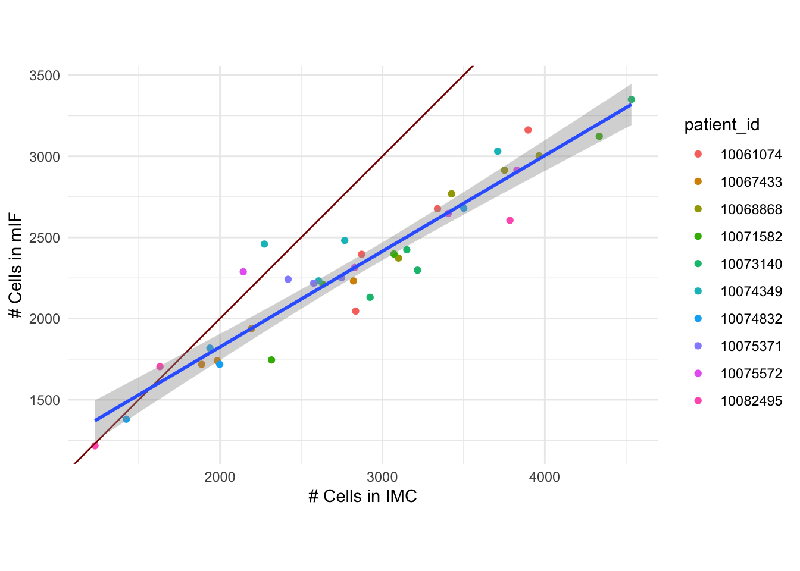
| Version | Author | Date |
|---|---|---|
| 4554a25 | nilseling | 2022-06-24 |
# With patient as covariate
ggplot(combined_df) +
geom_point(aes(count.x, count.y, color = patient_id)) +
geom_abline(slope = 1, intercept = 0, color = "dark red") +
geom_smooth(aes(count.x, count.y, color = patient_id), method='lm', formula= y~x,
fullrange=FALSE, se= FALSE) +
theme_minimal() + xlab("# Cells in IMC") + ylab("# Cells in mIF") +
coord_fixed()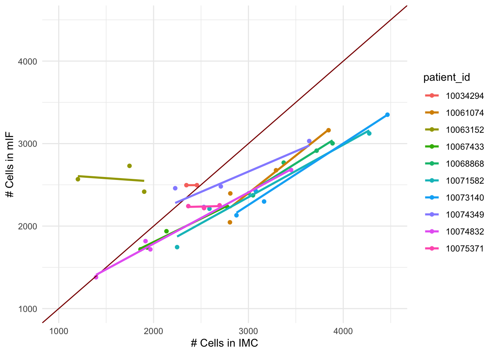
| Version | Author | Date |
|---|---|---|
| 4554a25 | nilseling | 2022-06-24 |
Next, we will compare the cell type fractions between the technologies.
# Match cell types
cur_mIF <- colData(sce_mIF)
cur_IMC <- colData(sce_IMC)
frac_IMC <- cur_IMC %>% as_tibble() %>%
group_by(sample_id, matched_celltype, .drop = FALSE) %>%
summarize(count = n()) %>%
mutate(frac = count/sum(count))`summarise()` has grouped output by 'sample_id'. You can override using the
`.groups` argument.frac_mIF <- cur_mIF %>% as_tibble() %>%
group_by(sample_id, matched_celltype, .drop = FALSE) %>%
summarize(count = n()) %>%
mutate(frac = count/sum(count))`summarise()` has grouped output by 'sample_id'. You can override using the
`.groups` argument.combined_df <- merge(frac_IMC, frac_mIF, by=c("sample_id", "matched_celltype"), sort=FALSE)
combined_df$patient_id <- sub("-", "", str_extract(combined_df$sample_id, "[0-9]{8}-"))
ggplot(combined_df) +
geom_point(aes(frac.x, frac.y, color = patient_id)) +
geom_abline(slope = 1, intercept = 0, color = "dark red") +
geom_smooth(aes(frac.x, frac.y), method='lm', formula= y~x, fullrange=TRUE) +
theme_classic(base_size = 20) + xlab("Fraction cell types in IMC") + ylab("Fraction cell types in mIF") +
facet_wrap(.~matched_celltype, scales = "fixed") 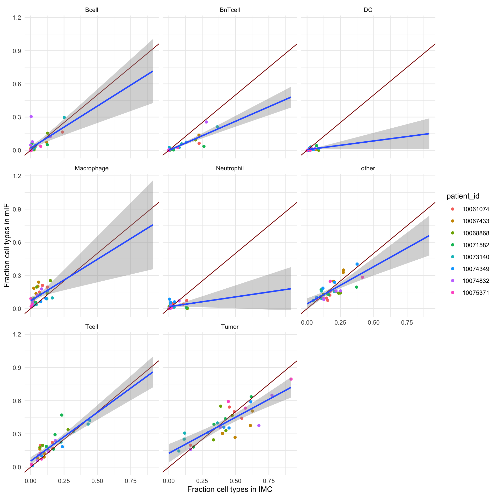
ggplot(combined_df) +
geom_smooth(aes(frac.x, frac.y, color = patient_id), se = FALSE, method='lm', formula= y~x, fullrange=TRUE) +
geom_point(aes(frac.x, frac.y, color = patient_id)) +
geom_abline(slope = 1, intercept = 0, color = "dark red") +
theme_classic(base_size = 20) + xlab("Fraction cell types in IMC") + ylab("Fraction cell types in mIF") +
facet_wrap(.~matched_celltype, scales = "free") 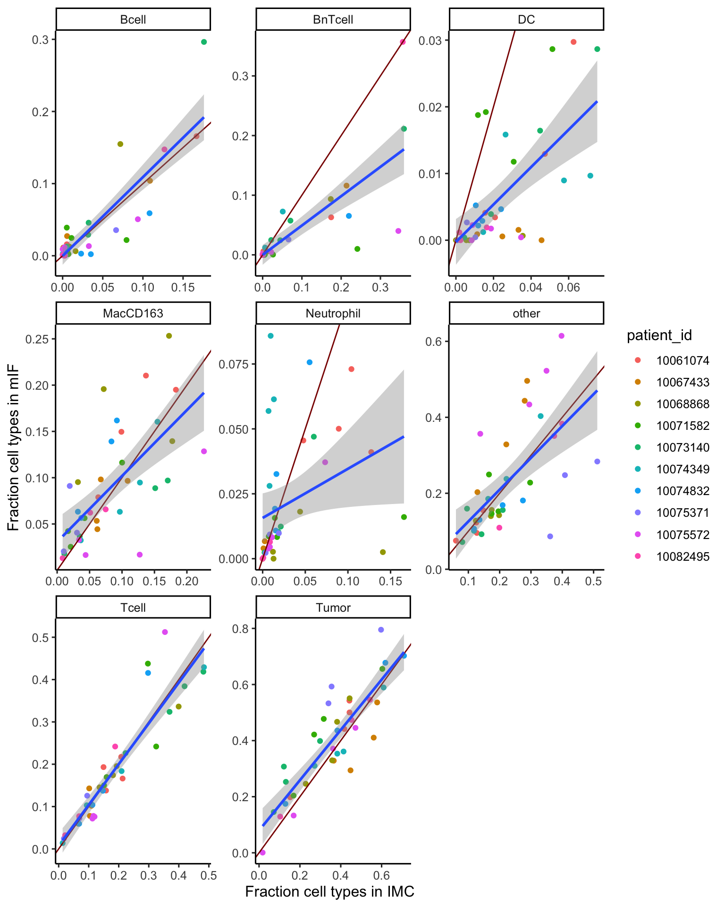
We will also now compute the correlation coefficients.
combined_df %>%
group_by(matched_celltype) %>%
mutate(cor_all = cor(frac.x, frac.y)) %>%
ungroup() %>%
group_by(matched_celltype, patient_id) %>%
summarize(cor = cor(frac.x, frac.y),
cor_all = mean(cor_all)) %>%
ggplot() +
geom_boxplot(aes(matched_celltype, cor)) +
geom_point(aes(matched_celltype, cor, color = patient_id)) +
geom_point(aes(matched_celltype, cor_all), color = "dark red", size = 3) +
theme_classic(base_size = 20) + theme(axis.text.x = element_text(angle = 90, hjust = 1))`summarise()` has grouped output by 'matched_celltype'. You can override using
the `.groups` argument.Warning: Removed 4 rows containing non-finite values (`stat_boxplot()`).Warning: Removed 4 rows containing missing values (`geom_point()`).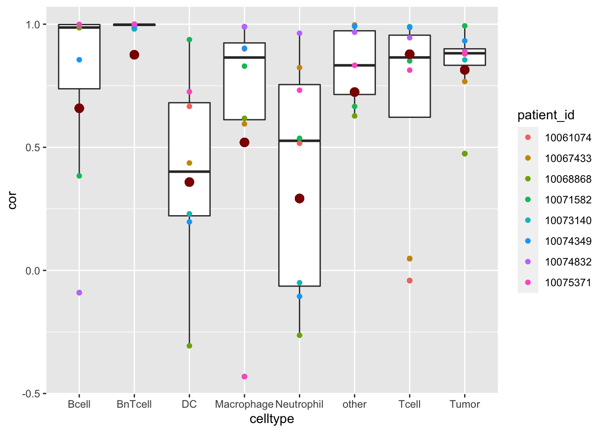
We will now compare the absolute number of detected cell types.
abs_IMC <- cur_IMC %>% as_tibble() %>%
group_by(sample_id, matched_celltype, .drop = FALSE) %>%
summarize(count = n()) `summarise()` has grouped output by 'sample_id'. You can override using the
`.groups` argument.abs_mIF <- cur_mIF %>% as_tibble() %>%
group_by(sample_id, matched_celltype, .drop = FALSE) %>%
summarize(count = n()) `summarise()` has grouped output by 'sample_id'. You can override using the
`.groups` argument.combined_df <- merge(abs_IMC, abs_mIF, by=c("sample_id", "matched_celltype"), sort=FALSE)
combined_df$patient_id <- sub("-", "", str_extract(combined_df$sample_id, "[0-9]{8}-"))
ggplot(combined_df) +
geom_point(aes(count.x, count.y, color = patient_id)) +
geom_abline(slope = 1, intercept = 0, color = "dark red") +
geom_smooth(aes(count.x, count.y), method='lm', formula= y~x, fullrange=TRUE) +
theme_classic(base_size = 20) + xlab("Absolute cell types in IMC") + ylab("Absolute cell types in mIF") +
facet_wrap(.~matched_celltype, scales = "fixed") 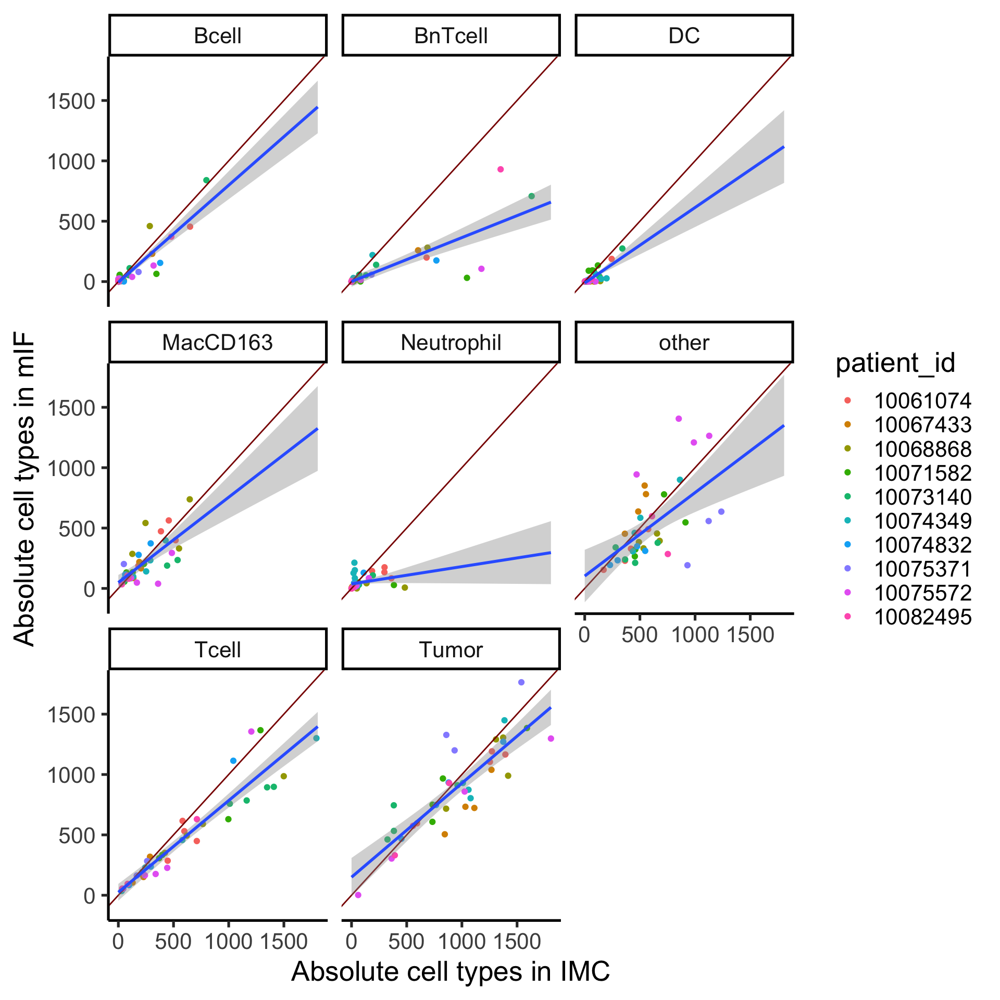
| Version | Author | Date |
|---|---|---|
| 09d32f6 | nilseling | 2022-06-30 |
ggplot(combined_df) +
geom_smooth(aes(count.x, count.y, color = patient_id), se = FALSE, method='lm', formula= y~x, fullrange=TRUE) +
geom_point(aes(count.x, count.y, color = patient_id)) +
geom_abline(slope = 1, intercept = 0, color = "dark red") +
theme_classic(base_size = 20) + xlab("Absolute cell types in IMC") + ylab("Absolute cell types in mIF") +
facet_wrap(.~matched_celltype, scales = "free") 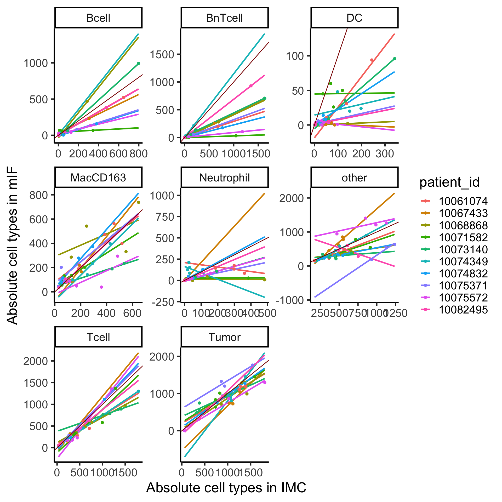
| Version | Author | Date |
|---|---|---|
| 09d32f6 | nilseling | 2022-06-30 |
We will next test for systematic biases in cell type abundances between the two technologies.
library(edgeR)
library(ggrepel)
abundances_IMC <- cur_IMC %>% as_tibble() %>%
group_by(sample_id, matched_celltype) %>%
summarize(count = n()) %>%
pivot_wider(names_from = sample_id,
values_from = count, values_fill = 0) %>%
as.data.frame()
rownames(abundances_IMC) <- abundances_IMC$matched_celltype
abundances_IMC$matched_celltype <- NULL
meta_IMC <- data.frame(sample_id = colnames(abundances_IMC),
patient_id = sub("-", "", str_extract(colnames(abundances_IMC), "[0-9]{8}-")),
modality = "IMC")
abundances_IF <- cur_mIF %>% as_tibble() %>%
group_by(sample_id, matched_celltype) %>%
summarize(count = n()) %>%
pivot_wider(names_from = sample_id,
values_from = count, values_fill = 0) %>%
as.data.frame()
rownames(abundances_IF) <- abundances_IF$matched_celltype
abundances_IF$matched_celltype <- NULL
meta_IF <- data.frame(sample_id = colnames(abundances_IF),
patient_id = sub("-", "", str_extract(colnames(abundances_IMC), "[0-9]{8}-")),
modality = "IF")
colnames(abundances_IMC) <- paste(abundances_IMC, "IMC")
colnames(abundances_IF) <- paste(abundances_IF, "IF")
combined_df <- cbind(abundances_IMC, abundances_IF[rownames(abundances_IMC),])
combined_meta <- rbind(meta_IMC, meta_IF)
# DA testing
y.ab <- DGEList(combined_df, samples=combined_meta, group = combined_meta$modality)
# Define the design matrix for the model: Add Patient ID to the model to account for matched design, add Location to account for different tumor regions, add tissue type as an additive factor
design <- model.matrix(~sample_id + modality, data = y.ab$samples)
# Estimate NB and QL dispersion
y.ab <- estimateDisp(y.ab, design, trend="none")
summary(y.ab$common.dispersion) Min. 1st Qu. Median Mean 3rd Qu. Max.
0.2581 0.2581 0.2581 0.2581 0.2581 0.2581 plotBCV(y.ab, cex=1)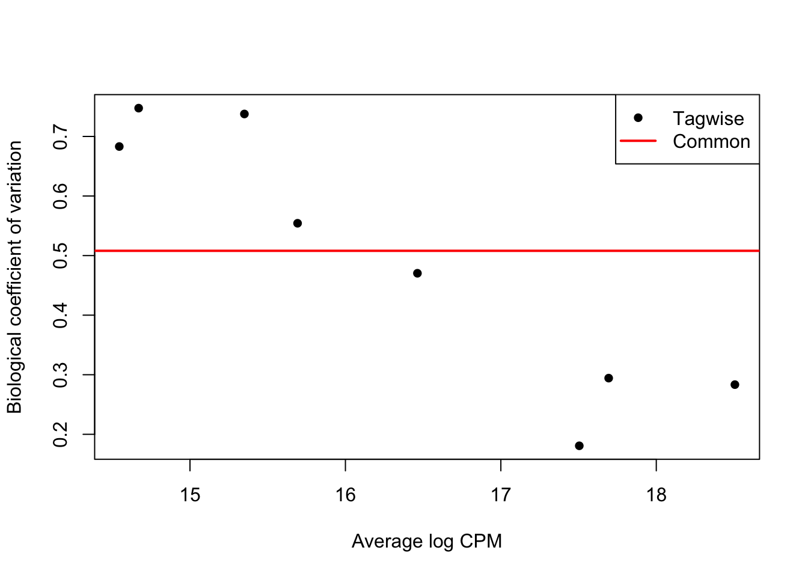
fit.ab <- glmQLFit(y.ab, design, robust=TRUE, abundance.trend=FALSE)
summary(fit.ab$var.prior) Min. 1st Qu. Median Mean 3rd Qu. Max.
0.5619 0.5619 0.5619 0.5619 0.5619 0.5619 plotQLDisp(fit.ab, cex=1)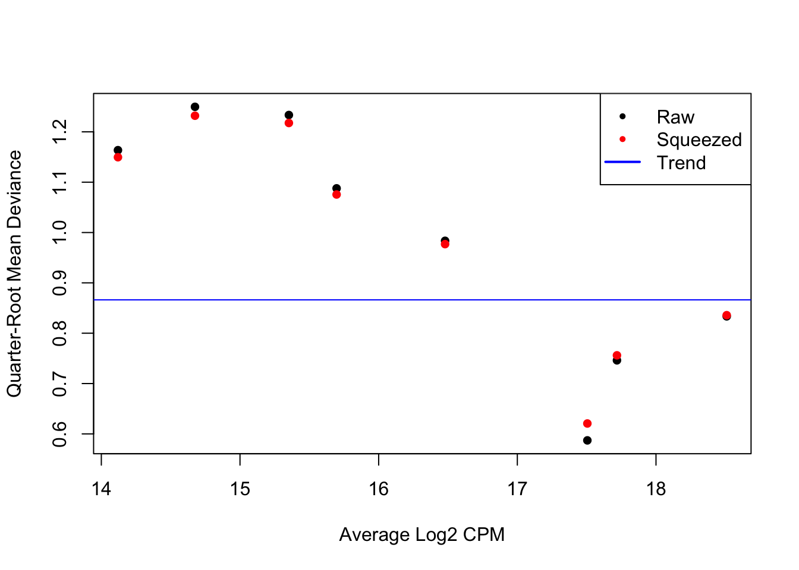
# Test for differential abundance of cell types in PT vs met tissue and plot
res <- glmQLFTest(fit.ab, coef=colnames(fit.ab)[ncol(fit.ab)])
summary(decideTests(res)) modalityIMC
Down 1
NotSig 5
Up 2DA <- topTags(res)$table
DA$celltype <- rownames(DA)
DA$sign <- DA$FDR<0.05
DA logFC logCPM F PValue FDR celltype
DC 2.11526359 14.54511 56.7802760 4.246216e-09 3.396973e-08 DC
Bcell -0.90478794 15.35011 9.2317191 4.197643e-03 1.679057e-02 Bcell
BnTcell 0.75786303 15.69220 8.3879988 6.417700e-03 1.711387e-02 BnTcell
MacCD163 -0.35934699 16.46330 4.4808165 4.060873e-02 8.121746e-02 MacCD163
Neutrophil 0.56682930 14.66975 3.2710313 7.873150e-02 1.259704e-01 Neutrophil
other 0.10792410 17.69369 1.1617524 2.876222e-01 3.834962e-01 other
Tumor -0.09034737 18.50573 0.5744237 4.529916e-01 5.177047e-01 Tumor
Tcell -0.02709685 17.50460 0.1734418 6.793188e-01 6.793188e-01 Tcell
sign
DC TRUE
Bcell TRUE
BnTcell TRUE
MacCD163 FALSE
Neutrophil FALSE
other FALSE
Tumor FALSE
Tcell FALSE# Volcano plot
ggplot(DA) + geom_point(aes(logFC, -log10(FDR), color = sign)) +
geom_label_repel(aes(logFC, -log10(FDR), label = celltype)) +
theme_classic()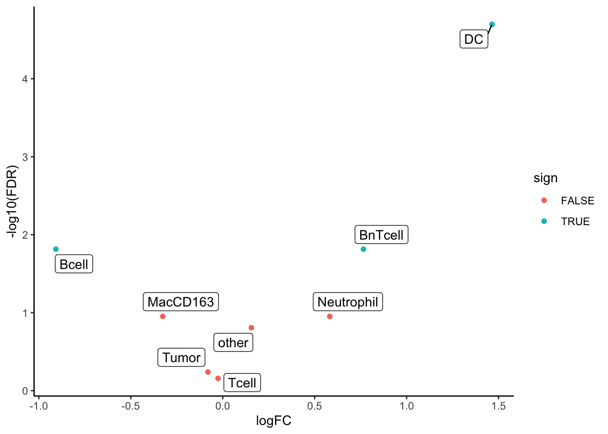
# MA plot
ggplot(DA) + geom_point(aes(logCPM, logFC, color = sign)) +
geom_label_repel(aes(logCPM, logFC, label = celltype)) +
geom_abline(intercept = 0, slope = 0, color = "dark red") +
theme_classic(base_size = 20)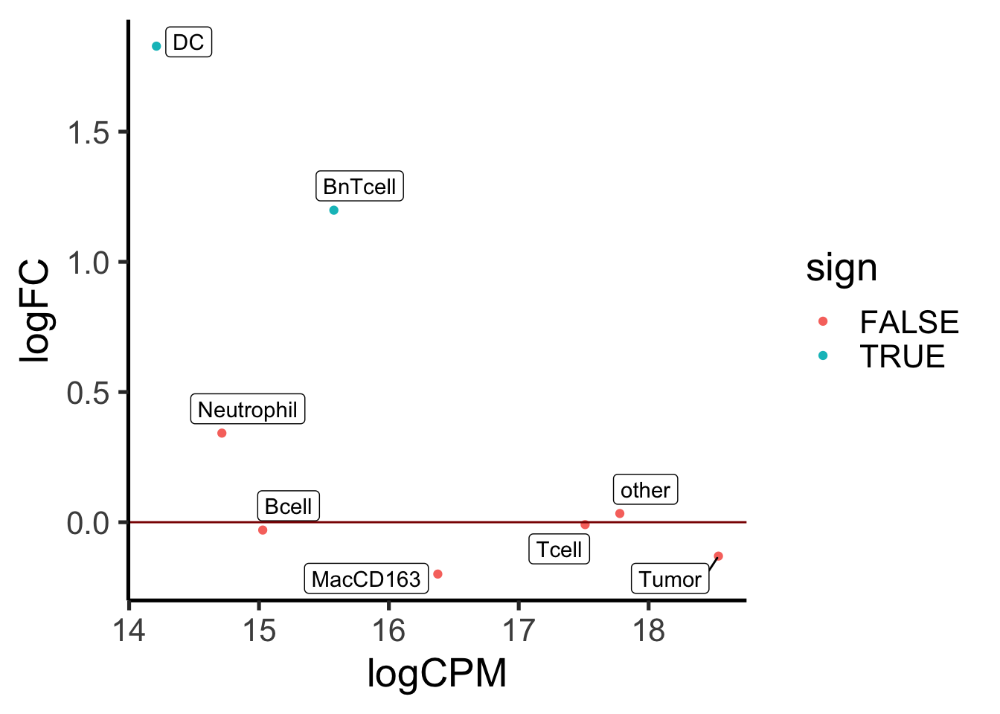
As heatmaps
Here, we will min-max scale the marker expression per image and compare binned rank averages.
cur_IMC <- lapply(unique(sce_IMC$sample_id), function(k){
cur_sce_IMC <- sce_IMC[,sce_IMC$sample_id == k]
cur_sce_IMC <- cur_sce_IMC[c("CD15", "Ecad", "CD3", "CD11c", "CD20", "CD163"),]
rownames(cur_sce_IMC) <- c("CD15", "CK", "CD3", "CD11c", "CD20", "CD163")
assay(cur_sce_IMC, "scaled") <- (assay(cur_sce_IMC, "exprs") -
rowMin(assay(cur_sce_IMC, "exprs"))) /
(rowMax(assay(cur_sce_IMC, "exprs")) -
rowMin(assay(cur_sce_IMC, "exprs")))
cur_aggr_IMC <- lapply(rownames(sce_mIF), function(x){
cur_marker_IMC <- assay(cur_sce_IMC, "scaled")[x,]
cur_out <- aggregate(cur_marker_IMC, by = list(ntile(cur_marker_IMC, 100)), mean)
cur_out$marker <- x
return(cur_out)
})
cur_aggr_IMC <- do.call(rbind, cur_aggr_IMC)
cur_aggr_IMC$sample_id <- k
return(cur_aggr_IMC)
})
cur_IMC <- do.call(rbind, cur_IMC)
cur_IF <- lapply(unique(sce_mIF$sample_id), function(k){
cur_sce_IF <- sce_mIF[,sce_mIF$sample_id == k]
assay(cur_sce_IF, "scaled") <- (assay(cur_sce_IF, "exprs") -
rowMin(assay(cur_sce_IF, "exprs"))) /
(rowMax(assay(cur_sce_IF, "exprs")) -
rowMin(assay(cur_sce_IF, "exprs")))
cur_aggr_IF <- lapply(rownames(sce_mIF), function(x){
cur_marker_IF <- assay(cur_sce_IF, "scaled")[x,]
cur_out <- aggregate(cur_marker_IF, by = list(ntile(cur_marker_IF, 100)), mean)
cur_out$marker <- x
return(cur_out)
})
cur_aggr_IF <- do.call(rbind, cur_aggr_IF)
cur_aggr_IF$sample_id <- k
return(cur_aggr_IF)
})
cur_IF <- do.call(rbind, cur_IF)
combined_df <- merge(cur_IMC, cur_IF, by = c("Group.1", "marker", "sample_id"), sort = FALSE)Visualize the results
ggplot(combined_df) +
geom_line(aes(x.x, x.y, color = sample_id)) +
facet_wrap(. ~ marker) +
geom_abline(intercept = 0, slope = 1, color = "dark red") +
theme(legend.position = "none") + xlab("Expression IMC") + ylab("Expression IF")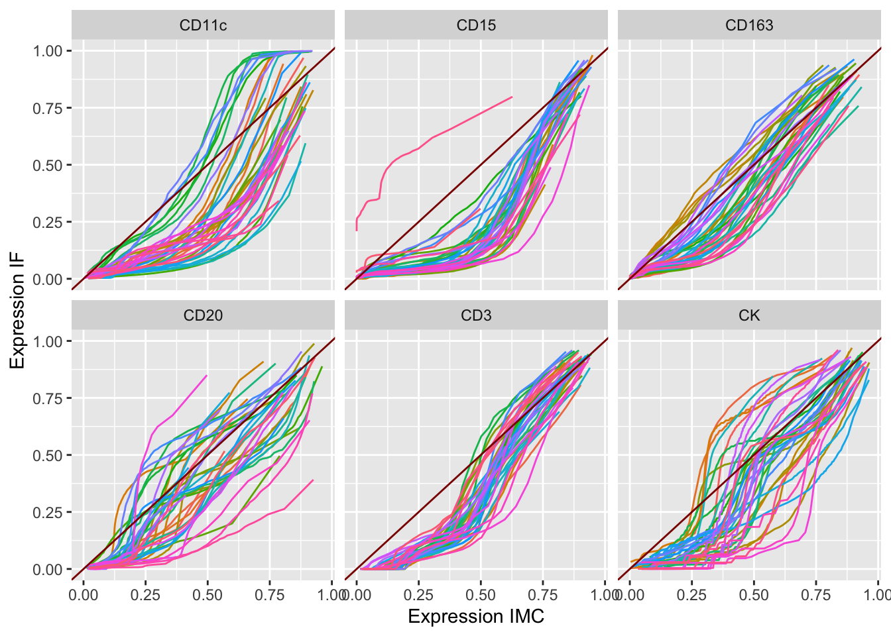
We will next plot the location of celltypes on the images.
library(cytomapper)
images_mIF <- readRDS("/Volumes/immucan_volume/processed_data/Panel_1/2022_WORKFLOW/mIF/Rout/images.rds")
images_IMC <- readRDS("/Volumes/immucan_volume/processed_data/Panel_1/2022_WORKFLOW/IMC/Rout/images.rds")
for (i in unique(sce_IMC$sample_id)) {
if (! i %in% names(images_mIF)) next
cur_IMC <- plotPixels(images_IMC[i],
colour_by = c("Ecad", "CD3", "CD20", "CD163", "CD15", "CD11c"),
return_images = TRUE, image_title = NULL,
scale_bar = NULL, legend = NULL,
bcg = list(Ecad = c(0, 5, 1),
CD3 = c(0, 5, 1),
CD20 = c(0, 5, 1),
CD163 = c(0, 5, 1),
CD15 = c(0, 5, 1),
CD11c = c(0, 5, 1)))
cur_mIF <- plotPixels(images_mIF[i],
colour_by = c("CK", "CD3", "CD20", "CD163", "CD15", "CD11c"),
return_images = TRUE, image_title = NULL,
scale_bar = NULL, legend = NULL,
bcg = list(Ecad = c(0, 5, 1),
CD3 = c(0, 5, 1),
CD20 = c(0, 5, 1),
CD163 = c(0, 5, 1),
CD15 = c(0, 5, 1),
CD11c = c(0, 5, 1)))
# Add points to IMC
cur_sce_IMC <- sce_IMC[,sce_IMC$sample_id == i]
cur_sce_mIF <- sce_mIF[,sce_mIF$sample_id == i]
pdf(file = paste0("~/SIB Swiss Institute of Bioinformatics/Robin Liechti - Workflow2021/comparisons/images_celltypes/", i, ".pdf"))
plot(cur_IMC$images[[1]])
points(cur_sce_IMC$Pos_X, cur_sce_IMC$Pos_Y,
col = "white",
pch = 16, cex = 1.1)
points(cur_sce_IMC$Pos_X, cur_sce_IMC$Pos_Y,
col = metadata(cur_sce_IMC)$colour_vectors$matched_celltype[cur_sce_IMC$matched_celltype],
pch = 16, cex = 0.9)
plot(cur_mIF$images[[1]])
points(cur_sce_mIF$nucleus.x, cur_sce_mIF$nucleus.y,
col = "white",
pch = 16, cex = 1.1)
points(cur_sce_mIF$nucleus.x, cur_sce_mIF$nucleus.y,
col = metadata(cur_sce_mIF)$color_vectors$matched_celltype[cur_sce_mIF$matched_celltype],
pch = 16, cex = 0.9)
dev.off()
}
# Write out legend
pdf(file = paste0("~/SIB Swiss Institute of Bioinformatics/Robin Liechti - Workflow2021/comparisons/images_celltypes/legend.pdf"))
plot(1:8, y = rep(1, 8), col = metadata(sce_IMC)$color_vectors$matched_celltype, pch = 16, cex = 2)
text(1:8, y = rep(0.8, 8), labels = names(metadata(sce_IMC)$color_vectors$matched_celltype))
text(2, y = 1.2, labels = "Celltypes")
plot(1:6, y = rep(1, 6), col = c("red", "green", "blue", "cyan", "magenta", "yellow"), pch = 16, cex = 2)
text(1:6, y = rep(0.8, 6), labels = c("Ecad", "CD3", "CD20", "CD163", "CD15", "CD11c"))
text(2, y = 1.2, labels = "Marker expression")
dev.off()For cell type comparison I will now write out the x/y cooridnates and cell labels for the IMC and mIF data.
for (i in unique(sce_IMC$sample_id)) {
cur_sce_IMC <- sce_IMC[,sce_IMC$sample_id == i]
cur_sce_mIF <- sce_mIF[,sce_mIF$sample_id == i]
write_tsv(as.data.frame(colData(cur_sce_IMC)), paste0("~/SIB Swiss Institute of Bioinformatics/Robin Liechti - Workflow2021/Zurich_data/data_for_comparisons/IMC_cells/", i, ".tsv"))
write_tsv(as.data.frame(colData(cur_sce_mIF)), paste0("~/SIB Swiss Institute of Bioinformatics/Robin Liechti - Workflow2021/Zurich_data/data_for_comparisons/mIF_cells//", i, ".tsv"))
}
sessionInfo()R version 4.2.1 (2022-06-23)
Platform: x86_64-apple-darwin17.0 (64-bit)
Running under: macOS Catalina 10.15.7
Matrix products: default
BLAS: /Library/Frameworks/R.framework/Versions/4.2/Resources/lib/libRblas.0.dylib
LAPACK: /Library/Frameworks/R.framework/Versions/4.2/Resources/lib/libRlapack.dylib
locale:
[1] en_US.UTF-8/en_US.UTF-8/en_US.UTF-8/C/en_US.UTF-8/en_US.UTF-8
attached base packages:
[1] stats4 stats graphics grDevices utils datasets methods
[8] base
other attached packages:
[1] ggrepel_0.9.2 edgeR_3.40.0
[3] limma_3.54.0 forcats_0.5.2
[5] stringr_1.4.1 dplyr_1.0.10
[7] purrr_0.3.5 readr_2.1.3
[9] tidyr_1.2.1 tibble_3.1.8
[11] ggplot2_3.4.0 tidyverse_1.3.2
[13] SingleCellExperiment_1.20.0 SummarizedExperiment_1.28.0
[15] Biobase_2.58.0 GenomicRanges_1.50.0
[17] GenomeInfoDb_1.34.1 IRanges_2.32.0
[19] S4Vectors_0.36.0 BiocGenerics_0.44.0
[21] MatrixGenerics_1.10.0 matrixStats_0.62.0
loaded via a namespace (and not attached):
[1] nlme_3.1-160 bitops_1.0-7 fs_1.5.2
[4] bit64_4.0.5 lubridate_1.9.0 httr_1.4.4
[7] rprojroot_2.0.3 tools_4.2.1 backports_1.4.1
[10] bslib_0.4.1 utf8_1.2.2 R6_2.5.1
[13] mgcv_1.8-41 DBI_1.1.3 colorspace_2.0-3
[16] withr_2.5.0 tidyselect_1.2.0 bit_4.0.4
[19] compiler_4.2.1 git2r_0.30.1 cli_3.4.1
[22] rvest_1.0.3 xml2_1.3.3 DelayedArray_0.24.0
[25] labeling_0.4.2 sass_0.4.2 scales_1.2.1
[28] digest_0.6.30 rmarkdown_2.17 XVector_0.38.0
[31] pkgconfig_2.0.3 htmltools_0.5.3 highr_0.9
[34] dbplyr_2.2.1 fastmap_1.1.0 rlang_1.0.6
[37] readxl_1.4.1 rstudioapi_0.14 farver_2.1.1
[40] jquerylib_0.1.4 generics_0.1.3 jsonlite_1.8.3
[43] vroom_1.6.0 googlesheets4_1.0.1 RCurl_1.98-1.9
[46] magrittr_2.0.3 GenomeInfoDbData_1.2.9 Matrix_1.5-1
[49] Rcpp_1.0.9 munsell_0.5.0 fansi_1.0.3
[52] lifecycle_1.0.3 stringi_1.7.8 whisker_0.4
[55] yaml_2.3.6 zlibbioc_1.44.0 grid_4.2.1
[58] parallel_4.2.1 promises_1.2.0.1 crayon_1.5.2
[61] lattice_0.20-45 splines_4.2.1 haven_2.5.1
[64] hms_1.1.2 locfit_1.5-9.6 knitr_1.40
[67] pillar_1.8.1 reprex_2.0.2 glue_1.6.2
[70] evaluate_0.18 modelr_0.1.9 vctrs_0.5.0
[73] tzdb_0.3.0 httpuv_1.6.6 cellranger_1.1.0
[76] gtable_0.3.1 assertthat_0.2.1 cachem_1.0.6
[79] xfun_0.34 broom_1.0.1 later_1.3.0
[82] googledrive_2.0.0 gargle_1.2.1 workflowr_1.7.0
[85] timechange_0.1.1 ellipsis_0.3.2